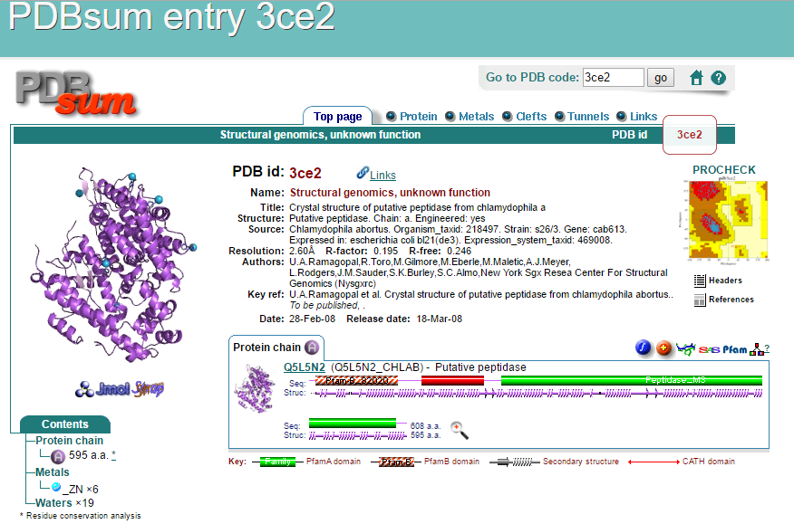

Just like secondary structure prediction, even for 3D structure prediction several tools could be used. Three dimensional structure prediction depends on different algorithm based on comparative or homology modelling and fold recognition methods, in which the search space is pruned by the assumption that the protein in question adopts a structure that is close to the experimentally determined structure of another homologous protein. One such tool is Swiss-Model, which would be used for this assignment;it assists and guides the user in building protein homology models at different levels of complexity. Swiss-Model does modelling in 3 modes automated mode, alignment mode, project mode.
After running the protein sequence (in fasta format) through Swiss-Model, the input get validated and we come to the page where there is an option to search for templates or building a model. After selecting template search, the page displayed below pops up and provides us several templates showing sequence similarities based on which our model would be built. Template searching is a critical step in homology modelling as quality of a model is determined based on it. Selecting templates with higher coverage and resolution, such as top 4 templates in this list, may result in more valid 3D model prediction.
Template Selection
The first template has highest coverage of 0.96 and sequence similarity of 0.38, similarly the second has coverage of 0.95 and sequence similarity of 0.38 and the third has coverage of 0.92 and sequence similarity of 0.4. It is advisable that we select the templates with highest coverage and better sequence similarity. After we select the template we can click on, “Build Model” which will build models based on the template we chose. In this case I chose top 3 templates with above score and build models based on it.
Model Selection
Three models are built based on top 3 templates we choose as displayed below. Swiss-model has more preliminary verification statistics, and is also well-recognized. Clicking on the drop down menu we could see sequence as well as statistical details of all the 3 models.
If we click on the individual template link page displayed below appears which has all the associated details, along with links to PDBe, PDB like databases for comparative analysis. After comparing the details of each model the first model was selected, this had coverage of 0.96 and sequence similarity of 0.38.

Model for Protein Sequence A3ZYW9(Associated PDB ID 3CE2)
Model1 was chosen, as it had the best coverage and sequence similarity with given protein ID than the other models. Clicking on the template link of this model, associated PDB file was downloaded to be used to generate interactive model. The associated PDB ID based on which the model was designed is 3CE2.
Interactive Model
Structure of the model chosen from the previous tool, Swiss-model was used to show the three-dimensional shape of protein sequence ID A3ZYW9, as shown in the following Jmol, interactive model. To generate the image, the pdb file of the chosen model(3CE2) was used. It was downloaded from Swiss-model page displayed above. The model is presented initially as a ball-and stick model, but other style could be selected. Some ways to interact with the model is as follows:
- Drive the cursor on the image and rotate to interact with it.
- Right click with mouse to choose from options such as:
- Change model style (or view/color), example by going to Style-->Scheme-->Cartoons.
- Rotate mouse wheel to zoom in/out.
Structure Validation
The three dimensional model built in the above stage could be inferred from comparison to known structures of homologous sequences but whether or not this model may exist in this form could be further validated by analyzing the stereochemical quality of the molecular network between residues. The stereochemical validation of modeled structure of protein is an important part of the comparative molecular modeling process. Also, analyzing variable such as the bond lengths, bond angles, dihedral angle, satisfaction of electron donors or acceptors, and phi/psi angles with a Ramachandran plot could assist in verify the probability of, if a given model would exist in reality.
Again several resources are available for structural validation of the chosen model. To begin with we could observe the QMEAN4 scores from Swiss-Model, which is measured by analyzing the torsion angle and has 4 structure descriptions. Another such medium is GMQE scores, where estimation is based on combined properties from the target-template alignment. The GMQE also takes into account the QMEAN4 score of the obtained model in order to increase reliability of the quality estimation. In case of our model (based on template 3CE2.1.A) the GMQE score is 0.70, which is acceptable.
For more in depth structural validation UCL’s, Structure Analysis and Verification Server, version 4 (SAVES) was used. This server runs six protein validation programs, Procheck, What_Check, Errat, Verify_3D, Prove, and CRYST1 record matches.
SAVES
The server gives the outputs of each program in the form of labels by a simple 3 color scheme:
- Pass: Satisfactory
- Warning: Inspection suggestion
- Error: Inspection recommended of the model.
The evaluation summary is displayed below, also screenshots of WhatCheck, Prove, Verify3D and Errat evaluations respectively.
- CRYST1 was unable to run due to no Cryst in the pdb file
- PROVE resulted in Warning, the total number of buried outlier protein atoms was 67 (2.9 percent) of scored atoms.
- ERRAT had score, Overall quality factor**: 95.890
- VERIFY3D resulted in Pass, At least 80% of the amino acids have scored >= 0.2 in the 3D/1D profile
- WHATCHECK overall had more 76/101 Pass, 20/101 Warning, and 5/101 Error, for overall Pass
- PROCHECK gave Error
Summary
- WHATHECK: The areas that whatcheck measured were as follows; most areas reported pass, there were few errors, which may need some alteration in order to correct the model, like some missing atoms or beta factor missing. There were also few warnings.
- PROVE: This is the file where number of outliers is given. In our model total number of buried outlier are 67.
- ERRAT: Is a program for verifying protein structures determined by crystallography. It shows the region of error (highlighted in dark) that can be rejected. For our model the overall quality factor**: 95.890.
- VERIFY3D: It represents three-dimensional (3D) profile of a protein structure in a table computed from the atomic coordinates of the structure that can be used to score the compatibility of the 3D structure model with any amino acid sequence. In case of our model, 96.97% of the residues had an averaged 3D-1D score >= 0.2 and at least 80% of the amino acids have scored >= 0.2 in the 3D/1D profile.
- PROCHECK: Gave error, results were not displayed. Hence independent PROCHECK was performed.
PDBSum and PROCHECK
As SAVES was not able to perform Procheck on the model submitted due to error, independent Procheck analysis were performed. The model was submitted to PDSum, which provided with full set of PDSum validation analysis as well as Procheck analysis. The validation analysis along with Procheck analysis are displayed below:

The PDBsum is a pictorial database that provides an at-a-glance overview of the contents of each 3D structure deposited in the Protein Data Bank. It shows the molecules that make up the structure like protein chains, DNA, ligands and metal ions and schematic diagrams of their interactions.
The PROCHECK analysis provide an idea of the stereochemical quality of all protein chains in a given PDB structure. They highlight regions of the proteins which appear to have unusual geometry and provide an overall assessment of the structure as a whole.
Main Chain parameter plot
The six graphs on the main-chain parameters plot shows how the structure (represented by the solid square) compares with well-refined structures at a similar resolution. The 6 properties plotted could be seen at the bottom (Plot statistics). Overall model does seem good.
Side Chain parameter plot
The five graphs on the side-chain parameters plot show how the structure (represented by the solid square) compares with well-refined structures at a similar resolution. The 5 properties of the plot are plotted at the bottom of the graph. Overall model does seem acceptable.
Ramachandran plot
This property is measured by the percentage of the protein's residues that are in the most favored regions of the Ramachandran plot. For a good model structure, obtained at high resolution, the expected percentage is to be over 90%. The shaded region reflects this expected region, decrease in it would worsening the resolution. In case of our model the residues in the favored regions are 94.3%. Thus making it a good model.
Conclusion
From all the above analysis, we could conclude that the model built for protein ID A3ZYW9, based on template 3CE2, is quite acceptable but we need to investigate further in order to make model better fit and eliminate the errors. There are tools available to adjust the model, like Deepview. By looking into the error and warning regions, an even better model could be configured. After further iterations a good quality model could be built.
Comparing Secondary Structure
As the three dimensional model has been developed based on the given protein sequence, we could examine the changes made to the secondary structure prediction. Based on the highest confidence the secondary structure build by Jpred, there would be 24 helices and 6 beta sheets (JNetPSSM).
The following picture shows the secondary structure that the three dimensional model was predicted to have by Swiss-Model, with the convention of arrows indicating beta strands and ovals denoting helices. This predication gave significantly more of both helices (34) and sheets (7) than Jpred. Many proteins can fold rapidly and spontaneously. This might probably be due to the residues that are far apart in the linear distance but comes close when folded in three-dimensional structure, thus causing increase in the formation of helices and sheets by increasing the possibility of cross linkage.
References
- Official website of Uniprot, available online on http://www.uniprot.org/.
- Official website of JPred, available online on http://www.compbio.dundee.ac.uk/jpred/
- Official website of Swiss-Model, available online on http://swissmodel.expasy.org/
- Official software JSMol, available online from http://jmol.sourceforge.net/
- Official website of Swiss-Model, available online on http://services.mbi.ucla.edu/SAVES/
- Official website of PDBSum, available online on https://www.ebi.ac.uk/thornton-srv/databases/cgi-bin/pdbsum/GetPage.pl?pdbcode=index.html